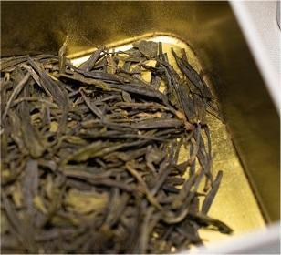
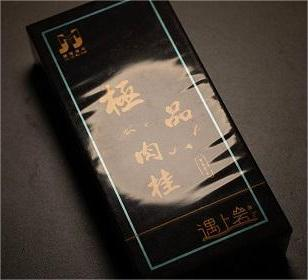

绿杨春
¥300/500g
仪征绿杨春，江苏省仪征市特产，全国农产品地理标志。仪征绿杨春是中国传统名茶，其特质为“汤色翠绿、味香醇厚”
蜜兰香、肉桂香
¥120/套
蜜兰香单枞、肉桂香单枞是凤凰单枞十大花蜜香型珍贵名枞之一。蜜兰香有明显的甘薯“蜜味”。肉桂香成茶显肉桂香味，“山韵”突出，极耐冲泡。
芝兰香、玉兰香
¥3500/500g
芝兰香单枞、玉兰香单枞是凤凰单枞十大花蜜香型珍贵名枞之一。芝兰香香气幽雅。玉兰香成茶色泽乌岽，玉兰花香清幽馥郁。
洞庭碧螺春
¥168/500g
碧螺春茶条索紧结，卷曲如螺，白毫毕露，银绿隐翠，叶芽幼嫩，冲泡后茶叶徐徐舒展，上下翻飞，茶水银澄碧绿，清香袭人，口味凉甜。
安吉白茶
¥500/500g
安吉白茶外形挺直略扁，形如兰蕙；色泽翠绿，白毫显露；冲泡后，清香高扬且持久。滋味鲜爽，饮毕，唇齿留香，回味甘而生津。
武夷肉桂
¥20/20g
肉桂的桂皮香明显，佳者带乳味，香气久泡尤存，冲泡四、五次仍有余香；入口醇厚回甘，咽后齿颊留香；汤色橙黄清澈。
-
联系我们
- 林铎鸣：
- 孙雨昕：2111498@mail.nankai.edu.cn
- 刘昌翰：2594651085@qq.com
- 卞一童：cucucu737@163.com